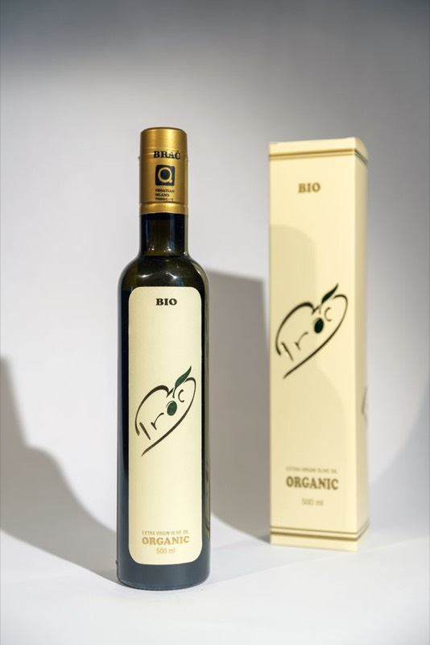
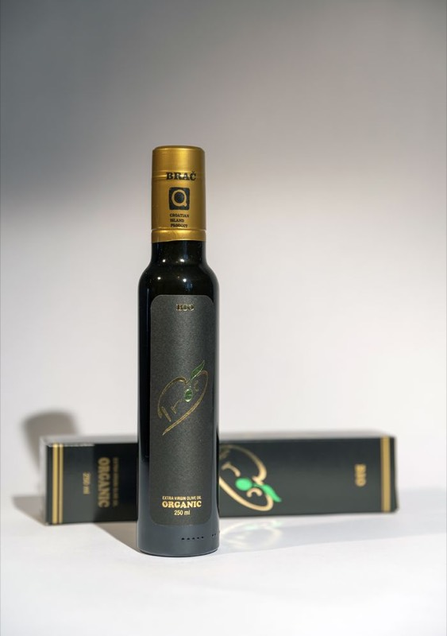
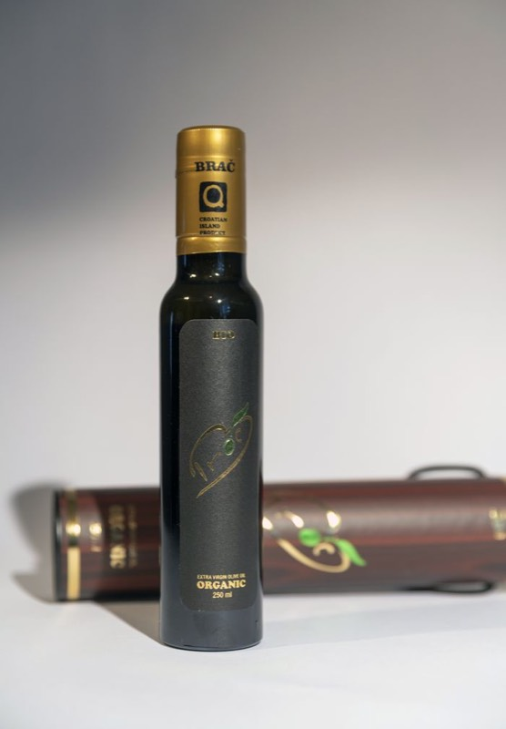
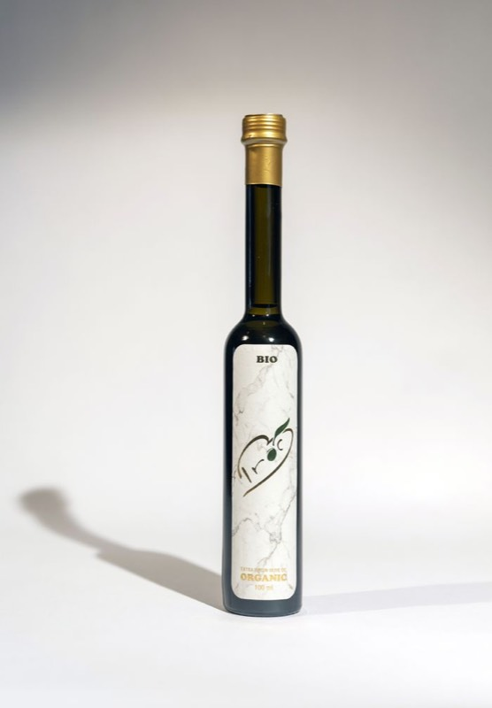
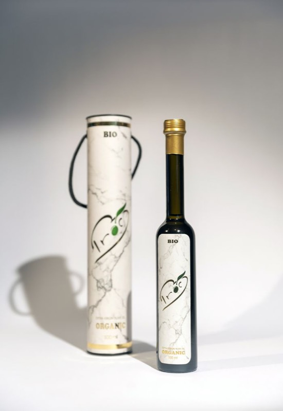

Naslovnica / Ulje
Bio maslinovo uljes otoka Brača
Ekstra djevičansko maslinovo ulje, ulje visoke kakvoće dobiveno izravno iz ploda masline isključivo mehaničkim postupcima. Ručno rađeno, s poštovanjem prema drevnoj vezi masline i otoka Brača.
Oblica – najzastupljenija u našim maslinicima
Ekološki od 2011., kontrolno tijelo Biotehnicon (HR-EKO-04)
E-mailom ili telefonom, za narudžbu i dostavu
Ekstra djevičansko BIO
Naše ekološko ekstra djevičansko ulje u bocama od 500 i 100 ml – za vlastiti stol ili kao poklon u kutiji.

Ekstra djevičansko ulje BIO
500 ml
S poklon kutijom
Ekstra djevičansko ulje BIO
500 ml

Ekstra djevičansko ulje BIO
100 ml
Crna i mramorna edicija
Premium ulje u tamnim bocama od 250 ml i mramornim od 100 ml – samostalno, u poklon kutiji ili u poklon tuljku.

Premium ulje – crna edicija
250 ml
S poklon kutijom
Premium ulje – crna edicija
250 ml

Premium ulje – crna edicija
250 ml
U poklon tuljku
Premium ulje – mramorna edicija
100 ml

Premium ulje – mramorna edicija
100 ml
U poklon tuljku
Ulje za kuhinju – sprej
Boca od 100 ml s raspršivačem.
„Pravodobnom berbom i preradom postižemo vrhunska kemijska i organoleptička svojstva našeg ulja.”
Naručite izravno
Javite nam se e-mailom ili telefonom za narudžbu i dostavu. Ulje, ali i likere, marmelade i sirupe koje sami proizvodimo, možete probati i kupiti u našoj kušaonici u Postirima.
- Telefon+385 97 649 9402
- E-mailpero.broc@gmail.com